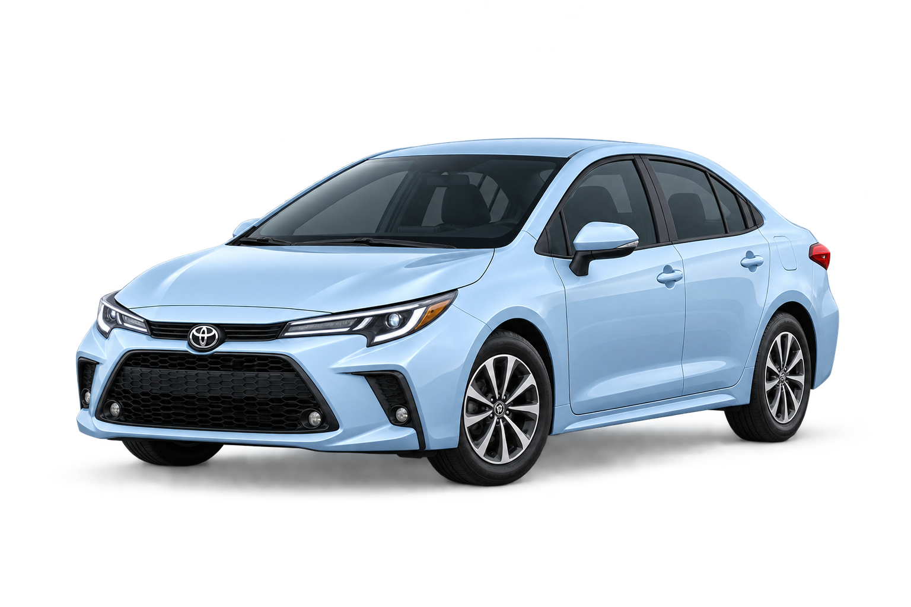

ค่ารักษาพยาบาลจากอุบัติเหตุ
คุ้มครองค่าใช้จ่ายในการรักษาพยาบาลของผู้ประสบภัยจากรถ ที่ได้รับบาดเจ็บจากอุบัติเหตุ ซึ่งรวมถึงผู้ขับขี่ ผู้โดยสาร และบุคคลภายนอก ตามสิทธิที่กฎหมายกำหนด โดยสามารถเข้ารับการรักษาได้ทันที ไม่ต้องรอการพิสูจน์ความผิด
คุ้มครองค่ารักษาพยาบาล และชดเชยความสูญเสียจากอุบัติเหตุทางถนน
เพื่อดูแลชีวิตของคุณและทุกคนบนท้องถนน
พ.ร.บ. รถยนต์ หรือพระราชบัญญัติคุ้มครองผู้ประสบภัยจากรถ เป็นประกันภัยภาคบังคับที่เจ้าของรถทุกคันต้องมีตามกฎหมาย เพื่อให้ความคุ้มครองพื้นฐานแก่ผู้ประสบภัยจากอุบัติเหตุที่เกิดจากการใช้รถบนท้องถนน ไม่ว่าผู้ประสบภัยจะเป็นผู้ขับขี่ ผู้โดยสาร หรือบุคคลภายนอก
พ.ร.บ. มีวัตถุประสงค์เพื่อช่วยลดภาระค่าใช้จ่ายด้านการรักษาพยาบาล และให้ความช่วยเหลือทางการเงินแก่ผู้ที่ได้รับบาดเจ็บ ทุพพลภาพ หรือเสียชีวิตจากอุบัติเหตุทางรถยนต์ โดยไม่ต้องรอการพิสูจน์ความผิดในเบื้องต้น
คุ้มครองค่าใช้จ่ายในการรักษาพยาบาลของผู้ประสบภัยจากรถ ที่ได้รับบาดเจ็บจากอุบัติเหตุ ซึ่งรวมถึงผู้ขับขี่ ผู้โดยสาร และบุคคลภายนอก ตามสิทธิที่กฎหมายกำหนด โดยสามารถเข้ารับการรักษาได้ทันที ไม่ต้องรอการพิสูจน์ความผิด
คุ้มครองการเสียชีวิต สูญเสียอวัยวะ หรือทุพพลภาพถาวร จากอุบัติเหตุทางรถยนต์ของผู้ขับขี่ ผู้โดยสาร และบุคคลภายนอก ตามเงื่อนไขและสิทธิที่กฎหมายกำหนด โดยการจ่ายค่าสินไหมทดแทนจะเป็นไปตามหลักเกณฑ์ของ พ.ร.บ.
ผู้ประสบภัยสามารถขอรับค่าเสียหายเบื้องต้นได้ทันที โดยไม่ต้องรอการพิสูจน์ความผิด ส่วนการจ่ายค่าสินไหมทดแทนเพิ่มเติมจะพิจารณาตามข้อเท็จจริงของแต่ละกรณีและความรับผิดตามกฎหมาย ซึ่งผู้ขับขี่อาจมีสิทธิได้รับเช่นกัน ขึ้นอยู่กับสถานการณ์

พ.ร.บ. รถยนต์ให้ความคุ้มครองเฉพาะการบาดเจ็บ การสูญเสียอวัยวะ ทุพพลภาพ หรือเสียชีวิตของคน ไม่ครอบคลุมค่าซ่อมแซมรถของคุณเอง และไม่ครอบคลุมค่าซ่อมรถของคู่กรณี รวมถึงทรัพย์สินอื่น ๆ ที่เสียหายจากอุบัติเหตุ อีกทั้งไม่คุ้มครองกรณีรถหาย ไฟไหม้ หรือความเสียหายที่ไม่เกิดจากอุบัติเหตุบนท้องถนน

ประกันภัยรถยนต์ภาคสมัครใจ เป็นอีกทางเลือกที่ช่วยคุ้มครองความเสียหายต่อรถของคุณ ความรับผิดต่อบุคคลภายนอก และความคุ้มครองอื่น ๆ ตามแผนประกันที่เลือก โดยประกันภาคสมัครใจไม่ได้ทดแทน พ.ร.บ. แต่เป็นความคุ้มครองส่วนเพิ่มเติมที่ช่วยให้คุณอุ่นใจยิ่งขึ้น
ดูประเภทประกันรถยนต์ →
เมื่อเกิดอุบัติเหตุและต้องการใช้สิทธิ พ.ร.บ. ควรเตรียมเอกสารที่เกี่ยวข้องให้ครบถ้วน เพื่อความสะดวกในการยื่นเรื่องกับบริษัทประกันภัย ได้แก่
เช่น ใบรับรองแพทย์ ใบเสร็จค่ารักษา
เช่น บัตรประชาชน
เช่น เลขทะเบียนรถ หรือสำเนากรมธรรม์
เช่น ใบแจ้งความ รูปถ่ายในที่เกิดเหตุ หรือเอกสารเพิ่มเติมที่บริษัทประกันร้องขอ
ยังต้องมีอยู่ พ.ร.บ. เป็นประกันภาคบังคับตามกฎหมายที่ให้ความคุ้มครองผู้ประสบภัยจากรถ ส่วนประกันชั้น 1 เป็นประกันภัยภาคสมัครใจที่คุ้มครองความเสียหายต่อตัวรถของคุณและความรับผิดต่อบุคคลภายนอกในขอบเขตอื่น ขึ้นอยู่กับแผนประกันที่เลือก
ไม่คุ้มครองครับ พ.ร.บ. ให้ความคุ้มครองการบาดเจ็บ การสูญเสียอวัยวะ ทุพพลภาพ หรือเสียชีวิตของคนเท่านั้น ค่าซ่อมรถของคู่กรณีหรือทรัพย์สินอื่น ๆ ต้องใช้ความคุ้มครองจากประกันภัยภาคสมัครใจ ตามแผนที่คุณเลือก
ผู้ขับขี่ ผู้โดยสาร และบุคคลภายนอก ที่ได้รับบาดเจ็บ เสียชีวิต หรือทุพพลภาพจากอุบัติเหตุ มีสิทธิได้รับความคุ้มครองตาม พ.ร.บ. โดยสิทธิอาจแตกต่างกันในแต่ละกรณีตามกฎหมาย เช่น ผู้ขับขี่อาจเป็นฝ่ายผิด จึงควรศึกษารายละเอียดและปรึกษาบริษัทประกันภัย

พูดคุยกับที่ปรึกษาของเรา ผ่าน LINE
เราอธิบายให้เข้าใจง่าย และช่วยเปรียบเทียบแผนที่เหมาะกับคุณ
เรื่องประกันรถ
ให้เราดูแล